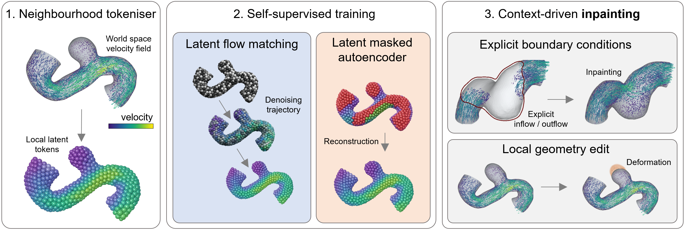

Self‑supervised learning for context‑driven fluid simulation
Inlet & outlet stay fixed, the interior flow is inpainted.
▾Machine‑learning surrogates for fluid dynamics perform well on narrow tasks but they fail when faced with new geometries or boundary conditions.
We train a model on many velocity fields, with no boundary conditions, so it learns what plausible flow looks like.
At inference we fix the known boundaries, such as inflow and outflow, or a region kept from a previous simulation, and the model inpaints the rest.
One model, no retraining: it generalises to unseen geometries and flow speeds, and reuses unchanged context for local geometry edits.
When only a small region of a vessel changes (an aneurysm grown locally), most of an existing simulation stays valid: a forward surrogate must redo the whole field, the inpainting model only fills the edited region. Drag the divider on any artery to compare the two states (the divider moves on all of them together). Left: the original vessel with its ground-truth CFD field. Right: the same vessel with the aneurysm grown, showing the inpainting prediction. The edited region is in red.
Drag the white divider to wipe between ground truth (left) and the inpainting prediction on the deformed geometry (right).
Interactive deformation figure unavailable (data not loaded).

We fix the boundaries at inlet and outlet and inpaint the rest based on the context. For the inference, we compare two different approaches: flow matching integrates the masked region from noise to flow, implicitly conditioned on the fixed inlet/outlet; masked auto-encoding predicts the masked region in a few steps, working inward from the fixed context. Drag to see the conceptual inpainting progress over time.
Neural surrogate models for computational fluid dynamics (CFD) are typically trained as forward operators that map explicit problem specifications, such as geometry and boundary conditions, to solution fields. This ties the model to the conditioning variables seen during training and limits reuse under boundary-condition shifts or local geometry changes. We propose to reformulate steady CFD inference as an inpainting problem: instead of training on explicit boundary conditions, we learn a self-supervised prior over velocity fields and impose boundary constraints only during inference by fixing known regions such as inlet, outlet or unchanged regions from previous simulations. To scale this idea to large 3D meshes, we introduce a local neighbourhood tokeniser that represents high-resolution velocity fields as compact spatial latent tokens and train latent flow-matching and masked-autoencoder models on these tokens. On intracranial aneurysm hemodynamics, our method reconstructs full velocity fields from sparse boundary context, outperforms supervised neural surrogates under boundary-condition and dataset shift and enables local geometry editing by reusing unchanged simulation context. These results suggest that viewing CFD inference as context-conditioned inpainting can turn neural surrogates from task-specific predictors into reusable flow priors.
Train a self-supervised latent model on CFD velocity fields, impose boundary conditions at inference, predict the flow by inpainting, generalise more flexibly to unseen geometries and flow speeds.
We propose to view CFD emulation as context-conditioned inpainting rather than supervised neural-operator modelling.
We show that this approach has significantly better generalisation properties with boundary conditions and geometric variations.
We propose local editing as a preliminary downstream task tailored to generative models.
If you find this work useful, please consider citing it.
@article{weidner2026inpaintingphysics,
title = {Inpainting physics: self-supervised learning for context-driven fluid simulation},
author = {Weidner, Jonas and Martin-Ruisanchez, Yeray and R{\"u}ckert, Daniel
and Wiestler, Benedikt and Suk, Julian},
journal = {arXiv preprint arXiv:2605.08832},
year = {2026}
}